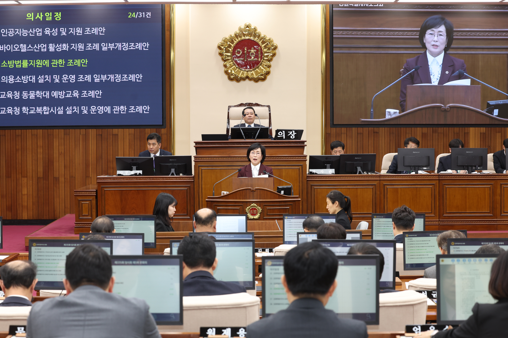
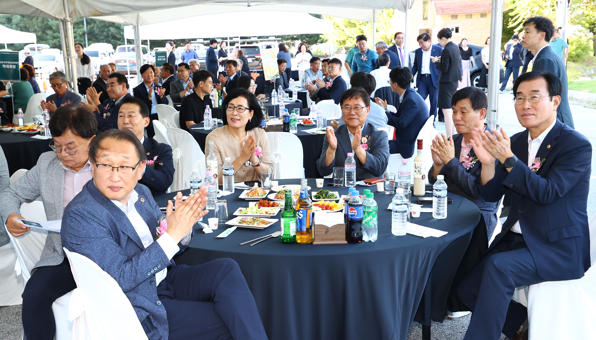
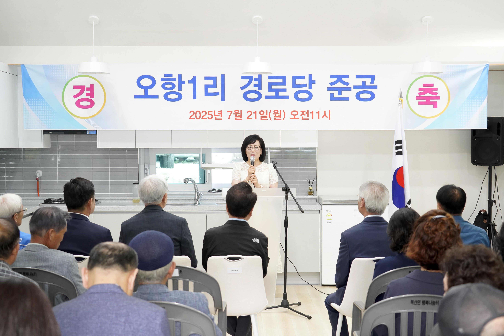
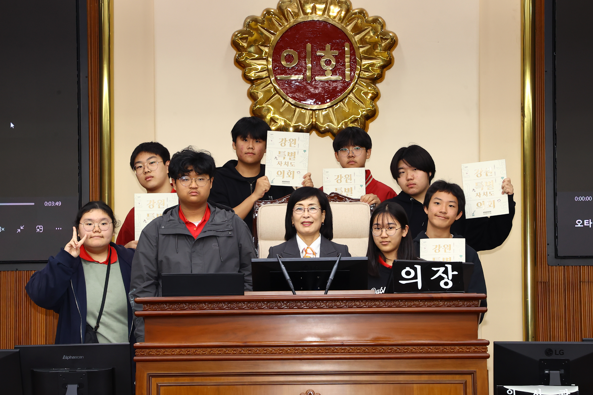
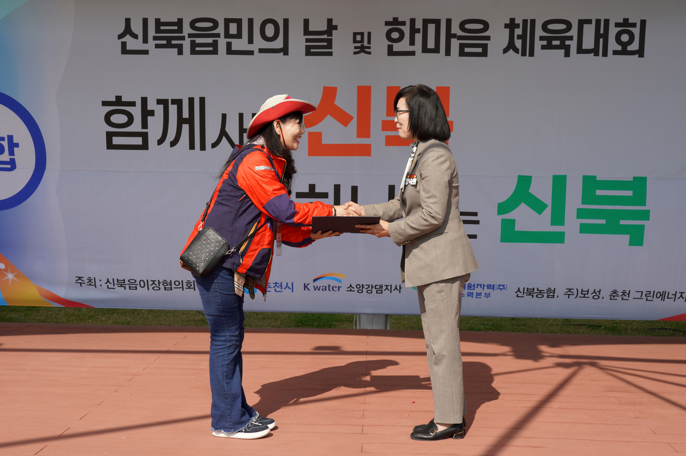
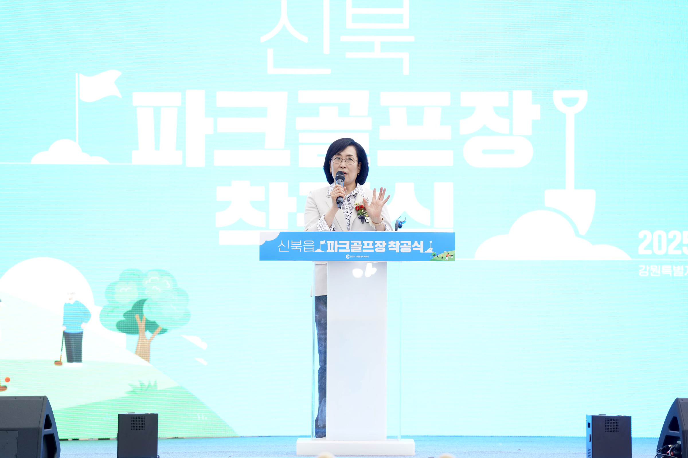

Career
검증된 일꾼, 4년의 기록
학력 · 주요 경력
- 강원특별자치도의원 (현)안전건설위원회 부위원장 · 운영위원회 위원
- 소양강댐 피해지역 공동대책위 간사 (현)
- 현대한국화협회 부이사장 · 한국전업미술가협회 이사 (현)
- 한림대학교 커뮤니티대학 지도강사 (전)
- 국민의힘 강원특별자치도당 여성위원회 위원장 (전)
- 대한민국 미술대전(국전) 한국화 심사위원 (전)
- 홍익대학교 미술대학원 동양화전공 석사 졸업
수상 · 표창
- NBN 2026 혁신인물대상의정정책 부문
- 대한민국문화연예대상지방의정 부문 · 제33회
- 강원산림환경대상입법 부문 · 제3회
- 2024 혁신리더대상의정발전 및 지역사회공헌 부문
- 우수의정대상예술문화 부문

제335회 본회의 발언 제334회 본회의
제334회 본회의
후계농업경영인 대회
북산면 경로당 준공식 제338회 본회의 도정질문
제338회 본회의 도정질문
강원중학교 법동아리 방문
신북읍민의 날 체육대회 장학2리 경로당 준공식
장학2리 경로당 준공식 안전건설위 민생현장 방문
안전건설위 민생현장 방문
신북 파크골프장 착공식 의용소방대 산불진화대 발대식
의용소방대 산불진화대 발대식 소양강댐 피해지원 간담회
소양강댐 피해지원 간담회제335회 본회의 발언
제334회 본회의후계농업경영인 대회
북산면 경로당 준공식
제338회 본회의 도정질문강원중학교 법동아리 방문
신북읍민의 날 체육대회
장학2리 경로당 준공식안전건설위 민생현장 방문신북 파크골프장 착공식
의용소방대 산불진화대 발대식소양강댐 피해지원 간담회Press
2026
도정질문
학교급식실 환기공사 수백억 예산 부실 공론화
한국산업안전보건공단 점검 결과를 근거로 환기설비 개선사업 총체적 부실을 도정질문으로 지적하여 행정 감시 역할 수행.
기사 보기
2025
도정질문
재난관리기금 미충족 3년 연속 법령 위반 지적
강원도 재난관리기금 충족률 38%(2024)→36%(2025)로 3년 연속 법령 위반. 재난 예방사업 사전 집행 불가, 초기 대응 지연 위험 경고.
기사 보기
2025
2025
2025
5분발언
강원재난안전연구센터 설립 촉구
기후위험지수 강원도 2.59 (전국 평균 1.73) 데이터를 근거로, 전국 17개 시도 중 11곳이 이미 운영 중인 재난안전연구센터의 강원도 설립을 촉구.
기사 보기
2025
간담회
강원 대안학교 교장단 간담회 개최
강원지역 10여 개 대안교육기관 교장단과 간담회를 열어 현장 목소리를 수렴. 공교육 학생 1인당 2,600만원 vs 대안학교 연 700만원 차별 문제 지적.
기사 보기
2025
보도자료
경상지역 산불 대응, 강원도 선제적 재난대책본부 가동 촉구
안전건설위 부위원장으로서 광역자치단체 최초 재난안전대책본부 가동을 이끌어내며, 텐트·매트 지원 및 성금 2억원 모금 성과.
기사 보기
2025
2025
현장활동
소양호 동자개 종자 5만 마리 방류행사
생태 복원과 지속가능한 어업을 위해 강원도 5개 시군 8개 서식지에 총 40만 마리 방류. 2~3년 후 약 3억원 어업인 소득증대 기대.
기사 보기
2025
2024